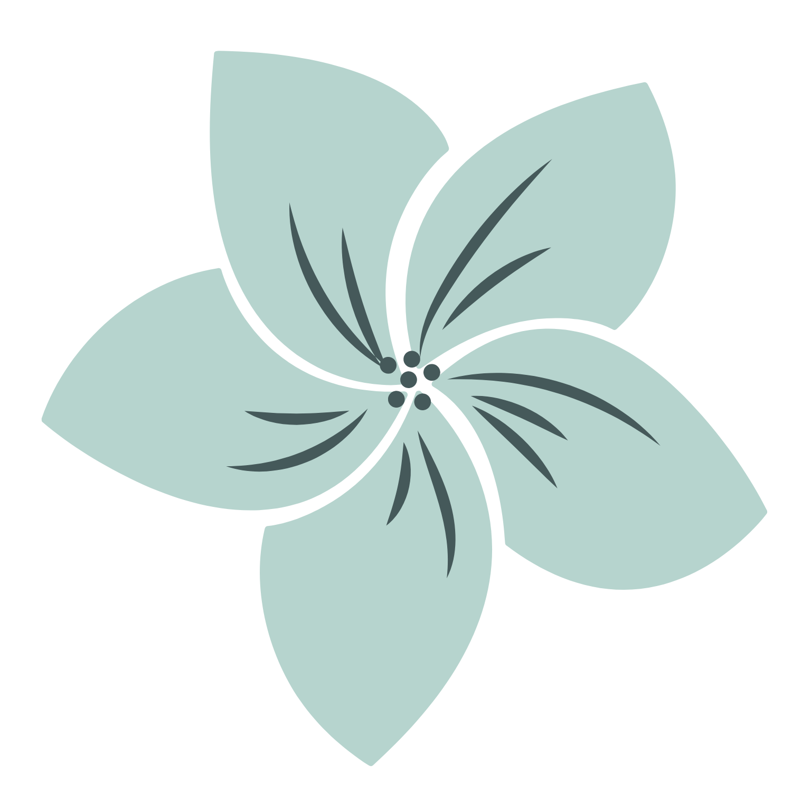

Aloha!
I’m Mira
Turning creative visions into
user-friendly realities.
I am a UX/UI designer and brand designer who brings a unique blend of creativity and strategic insight to every project. With a rich background as a brand photographer, I excel in transforming abstract concepts into tangible, visually compelling designs that resonate with users.
Learn more about me here > CaseStudies
↓